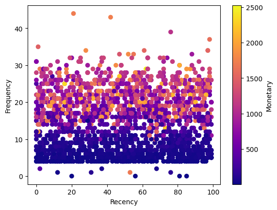
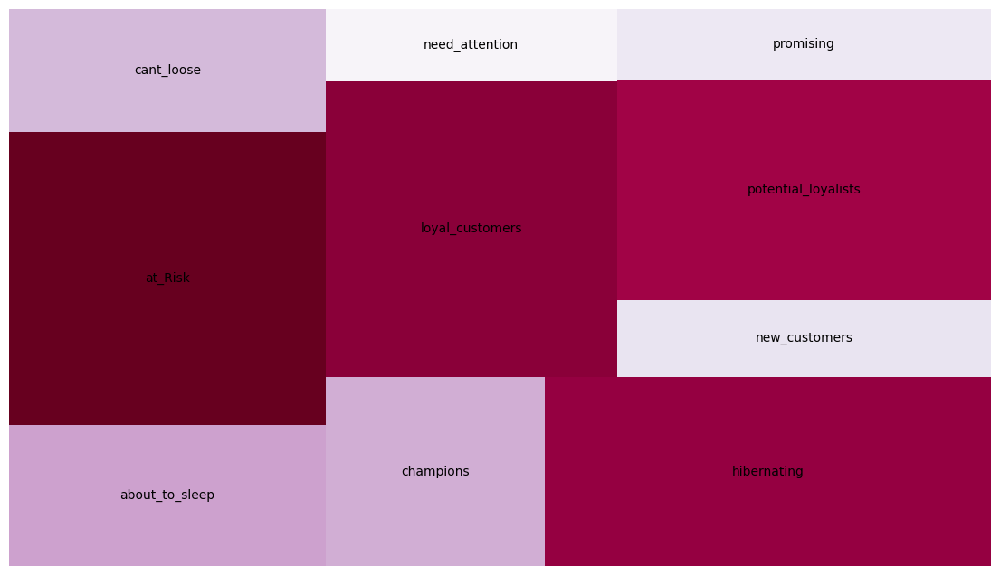

Porquê análises de RFM e de CLTV?
Com a aplicação de uma análise comportamental RFM (Recency, Frequency, Monetary) é possivel criar ofertas personalizadas tendo em conta o perfil do consumidor,
como também optimizar a retenção de clientes.
Já uma avaliação do valor do consumidor CTLV (Customer Lifetime Value) é uma medida usada para analisar o valor que um consumidor tem para uma empresa.
É uma medida que procura prever o valor que os consumidores terão para a empresa, a partir do seu valor passado.
Este medida torna-se crucial, uma vez que manter clientes é mais viável economicamente, do que tentar adquirir novos clientes.
A combinação deste dois tipos de análise fornece um quadro mais detalhado para o desenho de uma estratégia que procure optimizar lucros de uma campanha de marketing.
Elaboração da análise RFM
Para o cálculo de RFM são necessárias três variáveis: uma variável que represente a frequência de compra; uma segunda que quantifique o valor gasto em compras; e uma última variável que indique o quão recente foi a última compra feita.
A partir dessas variáveis, pode-se elaborar pontuações de RFM para realizar uma divisão em categorias dos clientes.
Sendo que foi obtido o seguinte resultado:

Os pontos que se situam a um nível superior a 20 em "Frequency", superior a 50 em "Recency" e com uma cor em tons de laranja ou amarelo, representaram os clientes mais valiosos para a empresa.
Agora será realizada a categorização de RFM, tendo em conta a seguinte metedologia [1]:
.png)
Foi obtido o seguinte resultado após a categorização RFM:

.png)
Após a segregação RFM, pode-se aplicar estratégias tendo em conta o perfil comportamental dos consumidores.
Análise CLTV
Para calcular o CLTV é necessário ter em conta a média de compra, a frequência de compra e a margem de lucro.
Com esta medida procura-se prever o valor que os consumidores terão para a empresa, tendo em conta o seu comportamento passado.
Sendo que com CLTV a segregação de consumidores será feita a partir das categorias:
de "A" (Consumidores com o maior valor para o empresa) a "D" (Consumidores com o menor valor para a empresa)
Foi obtida a seguinte segregação de consumidores:
.png)